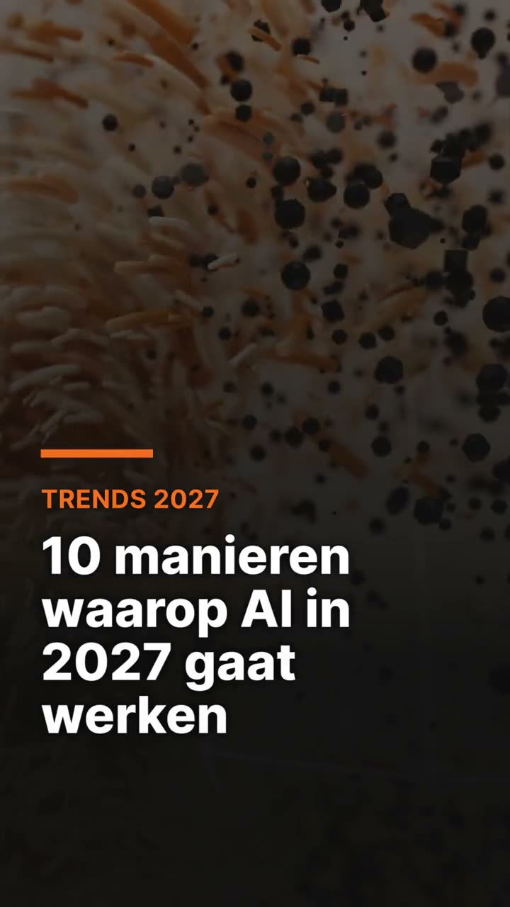
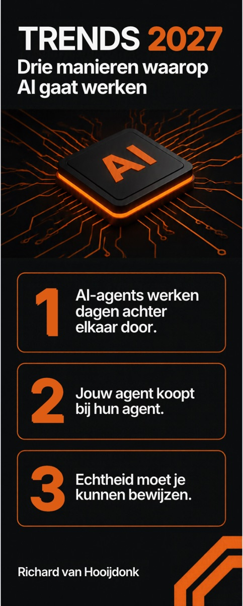

2027: het jaar dat AI ophoudt met praten en gaat werken
Tien trends, en de vraag wie de regie houdt
AI schuift in 2027 op van praten naar werken. Agents ronden taken af die uren duren, open modellen maken rekenkracht goedkoop en de gewone fabrieksrobot breekt het ene record na het andere. Voor leiders draait het daarom om één vraag: wat geef je uit handen, en waarvoor blijf je zelf verantwoordelijk?
2 · Halverwege: video en infographic als rustpunt
De tien trends in één minuutVideo, 60 seconden. Speelt pas af als je erop klikt, dus het artikel blijft snel.

Drie manieren waarop AI gaat werkenDe infographic op één pagina. Download als PDF